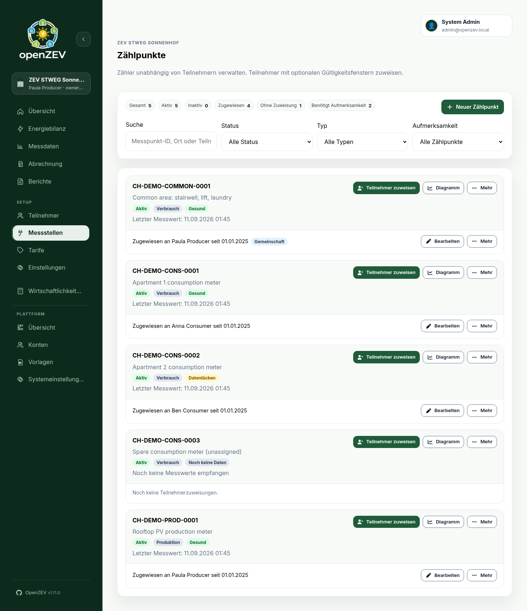
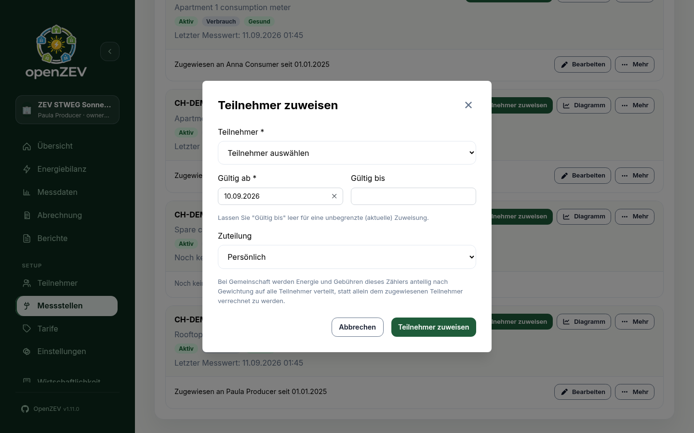

Metering Points¶
This guide covers metering point types, configuration, and maintenance in OpenZEV.
What is a Metering Point?¶
A metering point is a physical or logical energy meter:
- Assigned to a participant over a validity window rather than owned outright — see Assignment Validity Periods below
- Measures energy consumption or production
- Records readings at regular intervals (typically every 15 minutes)
- Forms the basis for invoice calculations
A single participant can be assigned multiple metering points (e.g., PV on roof + home consumption).

Metering Point Types¶
OpenZEV supports three metering point types:
| Type | Purpose | Usage |
|---|---|---|
| Consumption | Measures energy drawn from grid/community | Household loads, offices |
| Production | Measures energy fed into grid/community | Solar panels |
| Bidirectional | Combined meter (both consumption and production) | A household with its own PV on one meter |
Creating a Metering Point¶
ZEV Owners create metering points in Metering Points.
- Click New Metering Point
-
Enter details:
- Meter ID — Equipment/MSID number (required, must be unique)
- Meter type —
Consumption,Production, orBidirectional - Active — inventory status (defaults to on)
- Location (optional, e.g., "Roof solar panel")
-
Click Create Metering Point
-
To bill this meter, assign a participant: click Assign participant on its card and set the assignment's validity window — see below.
Tip: Active only tracks whether a meter is in inventory; on its own it does not affect billing. To stop billing a meter, end its assignment instead — see Decommissioning a Meter.
Assignment Validity Periods¶
Metering points themselves do not have valid_from/valid_to fields.
Date validity is defined on the metering point assignment to a participant:
- Valid From: Assignment start date (e.g., 2026-01-01)
- Valid To: Assignment end date (optional; leave blank for ongoing)
Assignment validity affects:
- Which participant is associated with the meter at a given date
- Whether imported readings can be attributed for billing
- Invoicing — only active assignment windows in the billing period are used

Example Validity Scenarios¶
Scenario 1: New solar installation mid-year
- Meter installed: 2026-06-15
- Create assignment with Valid From = 2026-06-15
- Leave assignment Valid To blank (ongoing)
- Result: Billing includes solar production from June onwards
Scenario 2: Meter replacement
- Old meter final reading: 2026-12-31
- New meter first reading: 2027-01-01
- Old assignment: Valid To = 2026-12-31
- New assignment: Valid From = 2027-01-01
- Result: No billing gaps or overlaps
Shared (Common-Area) Metering Points¶
A common-area meter — Allgemeinstrom: stairwell lighting, lift, laundry, heat pump, the shared grid connection — measures energy the whole community uses, not one household's. Every assignment has an Allocation setting that decides who pays for it:
| Allocation | Who pays |
|---|---|
| Personal (default) | The assigned participant alone. This is how every meter behaved before this setting existed. |
| Community | Every participant of the ZEV, split by their allocation weight. |
The assigned participant does not change. A community meter still has a holder of record — usually the Verwaltung or a caretaker participant — who stays responsible for the meter in the UI, in data-quality checks, and in the audit log.
Communitychanges only who is billed, not who holds it. The holder pays their own weighted share like everybody else, with no special case.
Assignment rows set to Community are marked with a Community badge in
the metering points list — visible on the common-area meter in the
page screenshot above.
Switching a meter to Community¶
- Go to Metering Points
- Find the meter and click Edit on its assignment row
- Set Allocation to
Community - Click Save Assignment
Regenerate any draft invoices for affected periods to pick up the change. Invoices that have already been sent are protected and will not change — see Invoice Management.
Switching mid-period is safe¶
Allocation is resolved per reading, not per invoice. A meter that is
Personal in January and Community from February bills correctly on both
sides of the change: January's readings go to the holder in full, February's
are split across the community. No readings are lost and none are billed
twice.
What gets split¶
For a Community meter, all of the following are divided by allocation weight:
- Energy consumed (both the local/solar share and the grid share), including any levies and percentage-based tariffs on it
- Energy produced, if the meter is a production or bidirectional meter — credits follow the same weights as charges
- Per-metering-point fees (see Tariff Configuration)
Invoice lines for a community share are labelled Gemeinschaftsanteil (Community share / Part communautaire / Quota comunitaria), so they are easy to tell apart from a participant's own consumption.
Eligibility is date-accurate¶
A participant only shares readings from days they were actually a member. A mid-period joiner pays nothing towards community energy measured before their join date, and a leaver's share stops on their leave date.
Note: An inactive community meter (Active = off) bills nobody for per-metering-point fees, exactly like an inactive personal meter. Its historical readings still count towards the community energy pool.
What a Metering Point Card Shows¶
Each card on the Metering Points page shows, at a glance:
- The meter ID and its location (or "No location set")
- Active/Inactive and meter-type badges
- A data-health badge —
Healthy,Data gaps,Data at risk, orNo data yet, based on the last 30 days of readings; click it to open the metering point's data-quality view - Last reading date, or "No readings received yet"
- A No current holder warning if the meter has readings but no participant is currently assigned to it
- Its current assignment (holder and validity window), or its full assignment history if it has more than one
Click Chart on a card for the metering point's full reading history.
Meter Maintenance¶
Updating a Metering Point¶
- Go to Metering Points
- Open the meter's ⋯ More menu and click Edit
- Update its ID, type, active status, or location
- Click Save Changes
Warning: Changing a meter ID retroactively can break billing audit trails. Prefer creating a new meter and adjusting assignment windows.
Decommissioning a Meter¶
To stop billing a meter:
- Click Edit on its current assignment row
- Set Valid To to the last day it should be billed
- Click Save Assignment
Then, if the meter is physically gone, open its ⋯ More menu, click Edit, set Active to off and click Save Changes. Deactivating removes it from data-health and "needs attention" monitoring and stops per-metering-point fees; on its own it does not stop energy billing. Historical data remains available either way.
Metering Point and Billing¶
During invoice generation:
- Resolves each participant's metering point assignments by date
- Loads readings from each point during the invoice period
- Allocates energy between local and grid (see Billing Allocation)
- Generates line items per metering point type
If a metering point is missing readings in an invoice period, nothing is estimated: the missing intervals simply count as no energy. The period's readiness check on Overview flags the gap before you generate, so import the missing data first — see Data Quality.
Next Steps¶
- Import readings: Metering Imports
- Check data quality: Metering Analysis
- Configure tariffs: Tariff Configuration
- Understand billing: How Energy Allocation Works